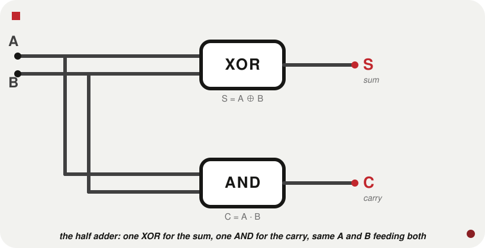
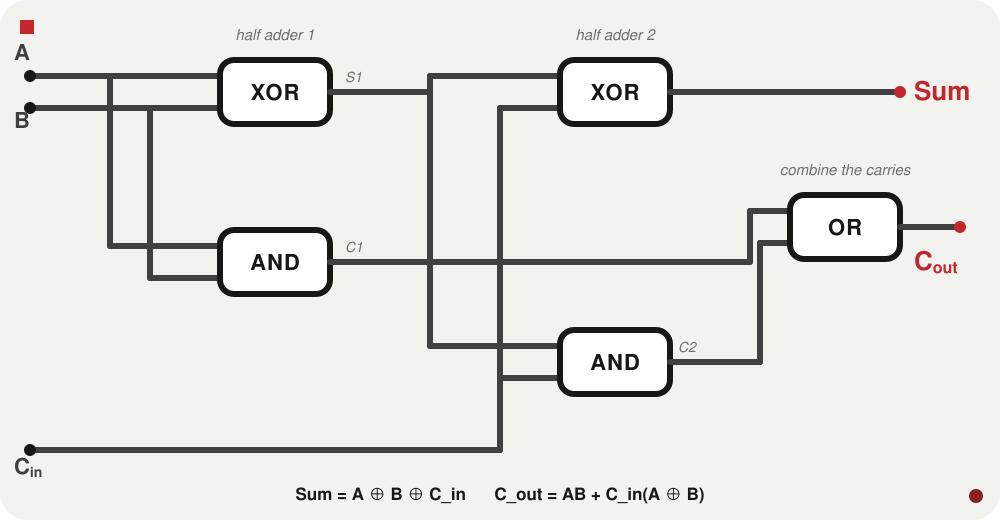
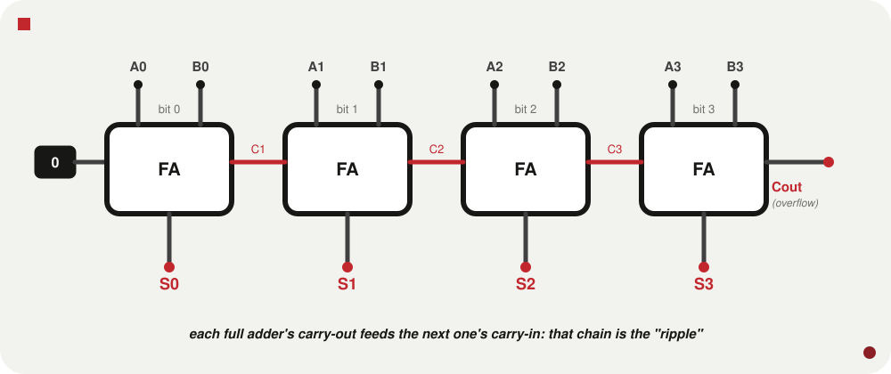
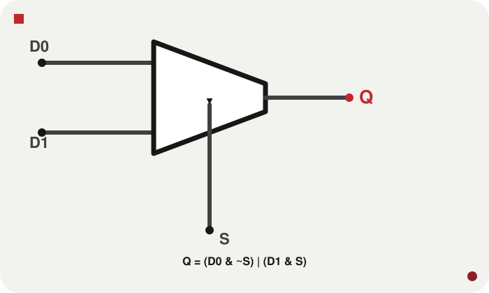
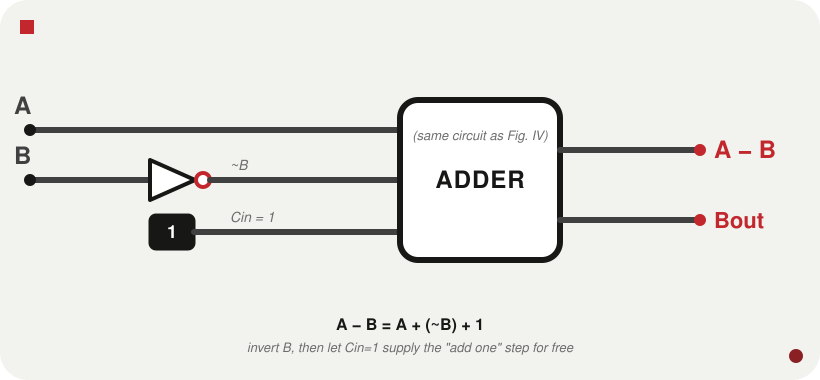
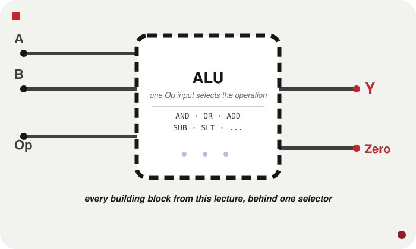

Two's Complement, Multiplexers, and the ALU
CS-UY 2214 | Computer Architecture and Organization
Week II | NYU Tandon School of Engineering
Before we build an adder, we need to decide how negative numbers are encoded: the adder has to handle them with zero extra logic.
Naive idea: reserve a sign bit (0 = positive, 1 = negative), use the rest for magnitude.
Breaks two ways: two representations of zero (+0, −0), and the adder needs a special case for the sign bit.
The MSB: a 1 means negative. 4-bit example:
| Pattern | Value |
|---|---|
| 0000 | 0 |
| 0111 | 7 |
| 1000 | −8 |
| 1111 | −1 |
Asymmetric range: 8 non-negative (0–7), 8 negative (−8 to −1): zero eats one non-negative slot.
Ordinary binary addition works correctly for both positive and negative numbers, with no special cases. The adder doesn't need to know if operands are signed: it just adds bits and discards the top carry.
Same adder, 3+5 and 3+(−3), zero additional logic. This is why this section comes before the adder: we need to know what it has to handle before we design it.
Result: −3 = 1101 in 4-bit two's complement.
Invert-then-add-1 is a two-instruction idiom in Game Boy assembly. PONG.gb stores ball direction as a signed byte; bouncing means negating it.
cpl is step 2, inc a is step 3: two SM83 instructions, the entire negation. Keep this in your back pocket; we meet its counterpart (the adder that consumes this) by the end of the lecture.
Same three steps, both directions: the encoding is its own inverse.
| Bits | Range |
|---|---|
| 4 | −8 to 7 |
| 8 | −128 to 127 |
| 32 | −2,147,483,648 to 2,147,483,647 |
Integer overflow is a real bug, not a theoretical curiosity: adding two large positive 32-bit integers can exceed the max, wrapping silently to a large negative number.
Week I's promise, cashed: "XOR turns out to be the addition primitive." Add two bits by hand:
| A | B | Sum | Carry |
|---|---|---|---|
| 0 | 0 | 0 | 0 |
| 0 | 1 | 1 | 0 |
| 1 | 0 | 1 | 0 |
| 1 | 1 | 0 | 1 |
Sum = A XOR B. Carry = A AND B. Two gates you already know, wired to the same two inputs, are a 1-bit adder.
We use a lot of Verilog this lecture, two weeks before it's formally taught. Just enough syntax to read what follows: a decoder ring, not a substitute for Lecture 3.
THE MODULE
A / B flow in, Y flows out. Nothing "runs" top to bottom: every line is a permanent physical connection, all existing simultaneously.
CONTINUOUS ASSIGNMENT
"Y is permanently wired to an AND gate fed by A and B," not "compute and store." &=AND, |=OR, ^=XOR, ~=NOT.
STRUCTURAL INSTANTIATION
gate_type instance_name(output, in1, in2, ...): output always first. Both styles describe the exact same wire.
BUSES
[2:0] means "bits 2 down to 0," 3 bits, A[2] most significant. Use the whole bus (A + B) or one bit (A[0]).
INTERNAL WIRES
wire declares a signal that exists only inside the module: connects gates, never touches the outside world.

A circuit that adds two 1-bit numbers, no carry-in. "Half" because it can't accept a carry from a less-significant bit.
Two independent gates sharing inputs: no "flow" between them.
A direct transcription of the truth table. Prefer this style once you have the Boolean expression in hand: which, from here on, is most of the time.
Three inputs (A, B, Cin) and two outputs: Sum, Cout.
| A | B | Cin | Sum | Cout |
|---|---|---|---|---|
| 0 | 0 | 0 | 0 | 0 |
| 0 | 1 | 1 | 0 | 1 |
| 1 | 0 | 1 | 0 | 1 |
| 1 | 1 | 1 | 1 | 1 |
Cout: a majority function: 1 whenever ≥2 of 3 inputs are 1. A⊕B is a half adder's sum; AB is its carry. A full adder is two half adders and one OR gate.

S1 is the first half adder's sum (A⊕B), immediately fed into the second half adder alongside Cin. C1 / C2 are the two carries: neither is the final answer alone, so they're OR'd into Cout. None of S1 / C1 / C2 are ports: they're wires, connecting components inside the module.

Chain N full adders, each Cout into the next Cin. Bit 0's Cin = 0. Read the sum bits together for N-bit addition.
Trace it: bit0's last argument is c1 (its carry out); bit1's third argument is that same c1 (its carry in). That reused wire name is the ripple.
Synthesises to the identical hardware: + isn't magic, it's shorthand the synthesis tool expands into exactly the full-adder chain. In practice, always write A + B.

Selects one of several inputs based on a selector signal. Q=D0 if S=0, Q=D1 if S=1.
| S | D0 | D1 | Q |
|---|---|---|---|
| 0 | 0 | 1 | 0 |
| 0 | 1 | 0 | 1 |
| 1 | 0 | 1 | 1 |
| 1 | 1 | 0 | 0 |
condition ? if_true : if_false: the same ternary from C or Python's x if cond else y, just reordered. Read S ? D1 : D0 as "if S, then D1, else D0": the mux's job description, word for word. This is the version you'll actually write.
Each ?: is a tiny 2:1 mux; chaining them builds a bigger mux from smaller ones. Q = D[S] is the entire 4:1 mux: the selector isn't choosing a branch anymore, it's indexing straight into the bus.
Fix D = 4'b1011 for both cases below. Case A: S=2'b10 (2) → Q=D[2]=0. Case B: S=2'b11 (3) → Q=D[3]=1. Same D, different selector, different bit reaches Q.

A − B = A + (−B), and negation is invert-then-add-1 from the top of the lecture. Fold the "+1" into the adder's existing Cin:
Invert B through NOT gates, feed into the adder's B input, tie Cin to 1. Same adder, different wiring.
{Bout, Diff} uses concatenation ({}): glues signals into one wider bus. A 4-bit input can produce a 5-bit result; Bout catches the extra top bit, Diff the remaining 4.
Read inside-out: A^B is bitwise XOR across the bus: "did this position differ?" per bit. The | here is a reduction operator, not bitwise OR: |(bus) ORs every bit into one: "is anything different?" Then ~ inverts: "is nothing different?" = equal.
Example: A=0101, B=0101 → A^B=0000 → reduction-OR 0 → invert 1 → Equal=1. A=0101, B=0100 → A^B=0001 → Equal=0.
Reuse the subtracter. A < B exactly when A − B is negative, i.e. the result's MSB is 1:
A fuller treatment also needs an overflow check on this sign bit: out of scope here, but the shortcut isn't bulletproof once you leave this course.
A shifter moves every bit of a value left or right by some number of positions—a fast way to multiply or divide by a power of two, among other uses.
Logical shift fills vacated bits with 0, both directions. Arithmetic shift differs only on the right: fills with copies of the sign bit, preserving sign.
Get this backwards on a signed value and you silently corrupt its sign: the same bug shape as the truncation trap. >> is logical, >>> is arithmetic in Verilog (operand must be signed).
Arithmetic right shift is fast division by a power of 2—but it rounds toward negative infinity, not toward zero. −5 >>> 1 = −3, not −2.
−5 ÷ 2 = −2.5 exactly, and there are two equally reasonable roundings: toward zero (C's /, gives −2) vs. toward negative infinity (what the shift mechanically does, gives −3). They agree for positive numbers—only diverge once you cross zero, which is exactly why this bug hides in every positive-only test case.
| 3-bit | Zero-ext | Sign-ext |
|---|---|---|
| 011 | 00000011 (3) | 00000011 (3) |
| 111 | 00000111 (7) | 11111111 (−1) |
They only disagree when the MSB is 1: zero-extending a negative value silently makes it a large positive one.
{5{a[2]}} is replication: "repeat this bit 5 times." Sign-unknown? That uncertainty is itself the bug.

The 4:1-mux ternary chain, five branches, each an entire circuit from this lecture. Op is purely a selector.
Trace: Op=3'b010 (ADD), A=4'b0011 (3), B=4'b0001 (1). Walk the ternary chain until a condition matches: Op==010? Yes, so Y = A+B = 4'b0100 (4) and Zero = (Y==0) = 0.
Zero is itself a small comparator ("is the output all 0s?"), used constantly in real processors to implement conditional branches: if a == b under the hood is usually "subtract, then check Zero," reusing the SUB branch instead of building a separate equality circuit.
Every time PONG.gb's ball moves, an adder does the work. UpdateBall, every frame:
add a, b is one instruction; underneath, an 8-bit ripple-carry adder. wYBallDir is 1 or −1, in two's complement: nobody special-cased the subtraction.
One circuit, built from gates you understood in Week I, doing every addition and subtraction sixty times a second on real hardware.